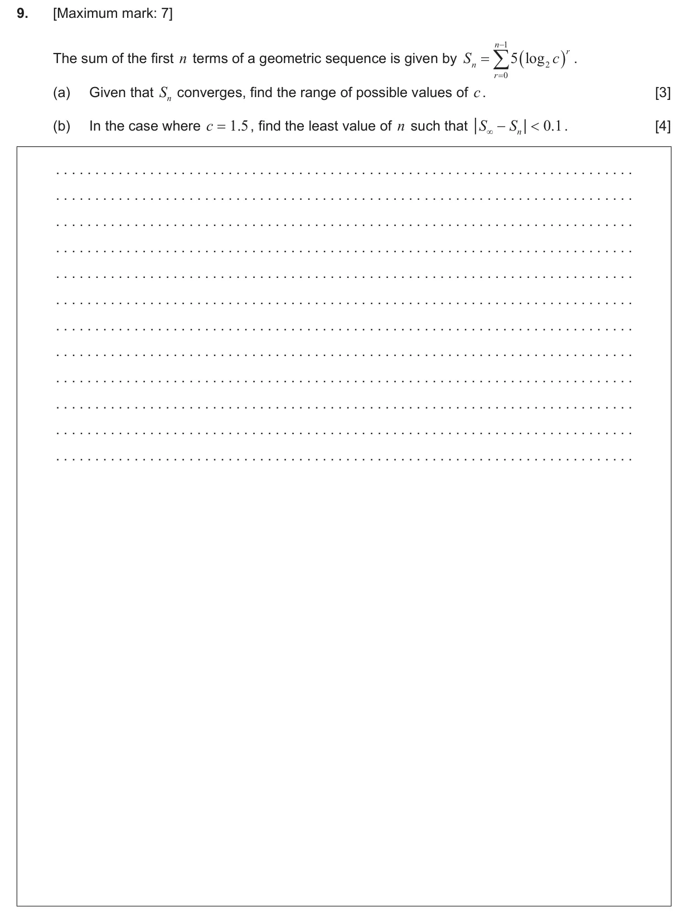
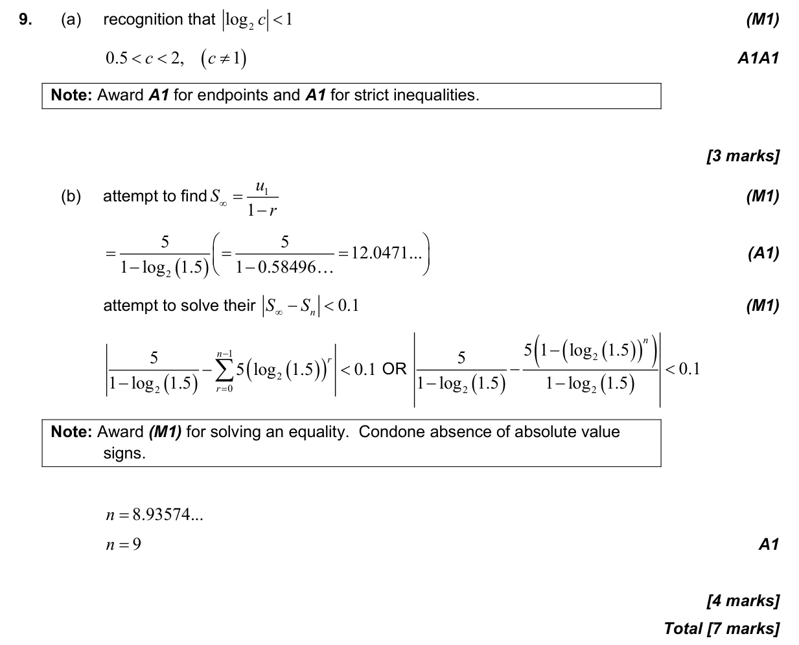

7 marks P2 TZ0 Section A Calculator 1.8 Sum of infinite geometric sequences1.3 Geometric sequences and series1.5 Laws of exponents with integer exponents and introduction to logarithms Question Hide breakdown ab Markscheme 